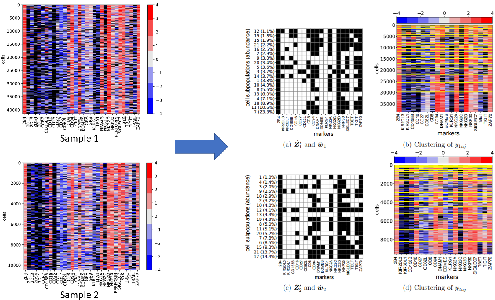

Bayesian Modeling for Heterogeneous Multivariate Data
Arthur Lui
Advisor: Juhee Lee
5 March, 2021
Department of Statistics
UC Santa Cruz
A Bayesian Feature Allocation Model for Identifying Cell Subpopulations
Using Cytometry Data
Cytometry at time-of-flight (CyTOF)
Commercialized in 2009
Makes use of time-of-flight spectrometry to accelerate, separate,
and identify ions by mass
Enables detection of many parameters (biological, phenotypic, or
functional markers) in less time and at a higher resolution
Led to greater understanding of natural killer (NK) cells
Natural Killer Cells
Natural Killer cells play a critical role in cancer
immunosurveillance.
NK cell diversity affects antiviral response.
Drs. Thall and Rezvani, at MD Anderson Cancer Center, have
conducted clinical trials to study the potential clinical efficacy of
umbilical cord blood (UCB) transplantation as a therapy for leukemia.
UCB NK cell therapy has the advantage of low risk of viral
transmission from donor to recipient .
In the trials, leukemia patients received UCB cell transplants,
and NK cell surface markers are measured using mass cytometry.
Obtaining cell subpopulations using overly-simplistic may yield an
unreasonably high number of subpopulations.
Objective

Figure 1:Given marker expression samples, identify potential latent
NK cell subpopulations and their abundances in each sample. Note
the pervasiveness of missing data (black cells).